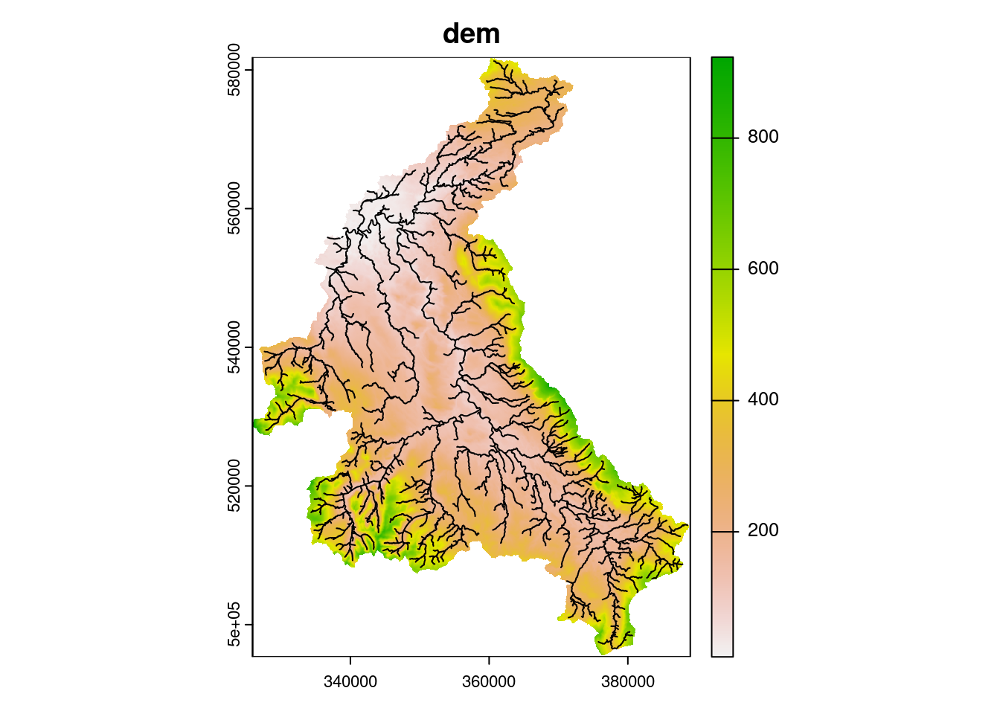
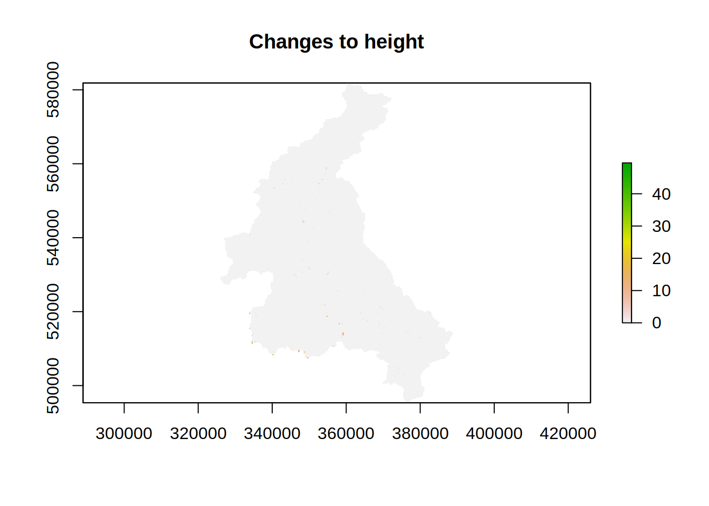
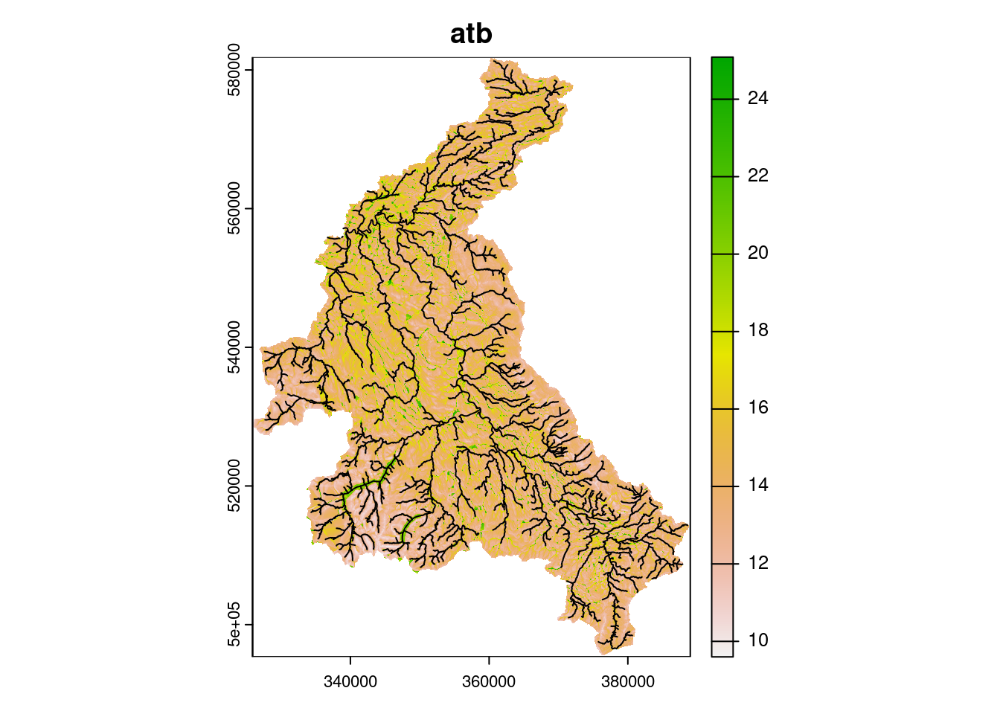
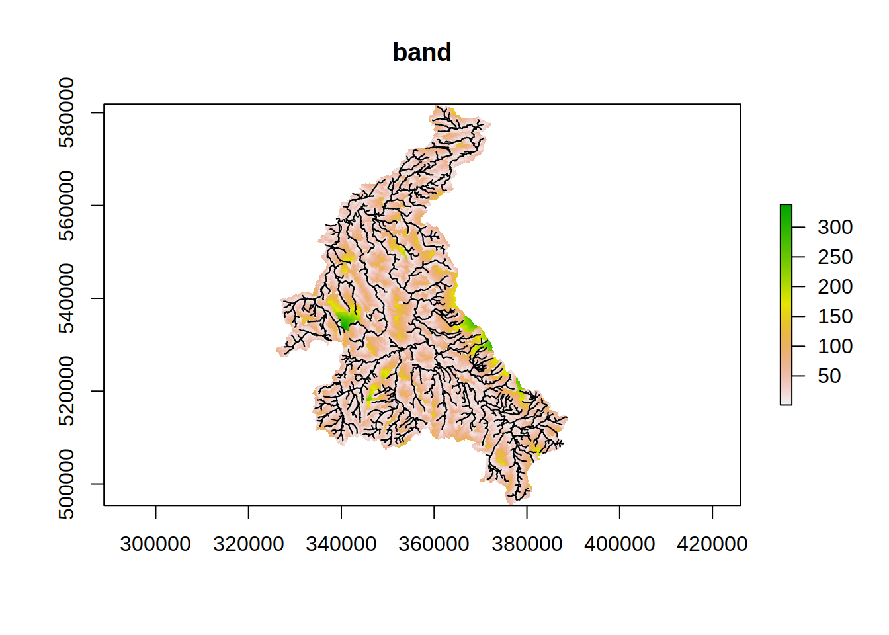
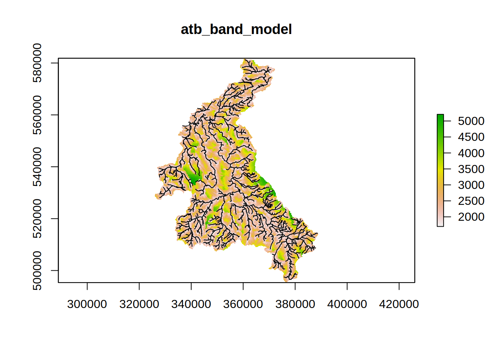

To process the GIS data into a Dynamic TOPMODEL structure of the Eden catchment and to show how to adapt this.
This exercise builds upon the early initial GIS processing, using the outputs generated during that exercise. As well as the packages already used you will require the dynatopGIS package. This can be installed with
install.packages("dynatopGIS", repos = c("https://waternumbers.github.io/drat", "http://cran.rstudio.com"))The dynatopGIS packages works through a number of steps to generate a dynamic TOPMODEL object suitable for use in with the dynatop package. Each step generates one or more layers which are saved as raster or shape files into the projects working directory (which is not necessarily the R working directory). A record of these layers is kept in the json format meta data file.
To start first load the library
library("dynatopGIS")Initialise the analysis by creating a new dynatopGIS object specifying the location of the meta data file, which will be created if it doesn’t exist.
ctch <- dynatopGIS$new(file.path(".","dynaGIS","meta.json"))
#> Warning in initialize(...): Creating meta file at./dynaGIS/meta.json
#> Warning in private$check_meta(verbose): No checks on the meta are currently
#> performedThe basis of the analysis is a raster Digital Elevation Model (DEM) of the catchment and a vector representation of the river network with attributes. Currently these can be in any format supported by the raster and sp packages respectively.
However, within the calculations used for sink filling, flow routing and topographic index calculations the DEM is presumed to be projected so that is has square cells such that the difference between the cell centres (in meters) does not alter.
Either the DEM or channel files can be added to the project first. In this case add the DEM processed during the initial GIS analysis:
ctch$add_dem(file.path(".","processed","dem.tif"))
#> Warning in showSRID(SRS_string, format = "PROJ", multiline = "NO", prefer_proj =
#> prefer_proj): Discarded datum OSGB 1936 in Proj4 definition
#> Loading required namespace: igraph
#> Warning in showSRID(SRS_string, format = "PROJ", multiline = "NO", prefer_proj =
#> prefer_proj): Discarded datum OSGB 1936 in Proj4 definitionAs part of loading the DEM any blocks of NA values within the DEM are filled to appear as sinks. This can be turned off which may significantly speed up the loading of large DEM’s.
Note An additional row and column of
NAvalues is added to each edge of the DEM. All raster layers in the project have the same projection, resolution and extent of the extended DEM.
Adding river channel data is more complex. The add_channel method requires a R object of class SpatialLinesDataFrame or SpatialPolygonsDataFrame (see the sp package for details of these classes) which represent either spatial lines or polygons with attribute data. Each line or polygon results in a single Channel HRU. The data.frame of attributes must contain the following properties
The names of the columns in the data.frame containing the required properties are specified through the property_names input to the add_channel method.
If the channel data is specified using spatial lines an optional extra property; the width of the channel; can be provided. If this is not provided and is required the value of the default_width input to the add_channel method is used.
NOTE All further columns of the data.frame are kept without change by the add_channel method with the exception of columns names id. This are copied to a column named original_id with a warning since the name id is used internally.
Looking at the data from the example
channel <- shapefile(file.path(".","unprocessed","Eden_River_Network"))
#> Warning in OGRSpatialRef(dsn, layer, morphFromESRI = morphFromESRI, dumpSRS =
#> dumpSRS, : Discarded datum OSGB_1936 in Proj4 definition: +proj=tmerc +lat_0=49
#> +lon_0=-2 +k=0.9996012717 +x_0=400000 +y_0=-100000 +ellps=airy +units=m +no_defs
head(channel@data)
#> name1 identifier
#> 0 <NA> 71496043-333C-4644-814E-B3149484421A
#> 1 Rowantree Gill C1E710A3-ED27-4F9A-BF57-9E2314535C60
#> 2 Lady Sike 0B92A0E8-4B7B-43D0-9C01-CECD46AD3942
#> 3 <NA> 223E669F-BC1A-4610-B0C4-D77DC60F805B
#> 4 Potter Sike D0D77BE7-8F5F-45A8-9AD4-9EABE2534027
#> 5 Molds Sike EB6B86F7-4DDD-4FEC-BA86-EAA608D2DF52
#> startNode endNode
#> 0 785AA707-7ACC-433F-8418-BDDA18FABB2C FD4A9B62-950E-4362-B4AC-0713D63B99D1
#> 1 FD4A9B62-950E-4362-B4AC-0713D63B99D1 323B8FBC-8D31-4130-B924-A236F14BC96D
#> 2 76150301-B4E4-4B35-8CB0-C562296976A1 41DAD94A-AF47-4302-96B6-06F390CA0D5E
#> 3 2AF34735-BB17-4A00-BED6-B158A3F3C2A8 86D4F84F-FEDF-42C1-B041-A314D1A45EAD
#> 4 23347D8B-CEAA-460E-8851-96B8EE7291DC 41DAD94A-AF47-4302-96B6-06F390CA0D5E
#> 5 86D4F84F-FEDF-42C1-B041-A314D1A45EAD 3AD38B31-B2E8-492C-A4BA-D05440776857
#> form flow fictitious length name2
#> 0 inlandRiver in direction false 31 <NA>
#> 1 inlandRiver in direction false 986 <NA>
#> 2 inlandRiver in direction false 321 <NA>
#> 3 inlandRiver in direction false 743 <NA>
#> 4 inlandRiver in direction false 263 <NA>
#> 5 inlandRiver in direction false 71 <NA>we see that all the required properties are present, but no width is given. Using a constant width of 5 meters for all channels can be achieved by setting
ctch$add_channel(channel,property_names = c(length = "length", startNode = "startNode", endNode = "endNode"),default_width=5)
#> Warning in private$apply_add_channel(channel, property_names, default_width):
#> Modifying to spatial polygons using default widthAlternatively an additional column containg the width could be added to the channel data.
channel$width <- 5 ## add column of widths to data frame, could be variable values
## add channels with a constant width of 5m
ctch$add_channel(channel)
## this is short for
## ctch$add_channel(channel,property_names = c(length = "length", startNode = "startNode", endNode = "endNode",width="width"))
## since the default value of property_names are validSo far, the DEM and channel data exist in isolation. Next, we compute some basic summaries for each cell in the DEM, specifically: - land area - the area in the DEM cell covered by land - channel area - the area in the DEM cell covered by channel - channel id - the id of the channel within the cell, corresponding to the id in the channel object.
If multiple river lengths intersect a DEM cell the properties of the channel length with the largest area of intersection are used.
This computation is done by calling
ctch$compute_areas()
#> Warning in showSRID(SRS_string, format = "PROJ", multiline = "NO", prefer_proj =
#> prefer_proj): Discarded datum OSGB 1936 in Proj4 definition
#> Warning in OGRSpatialRef(dsn, layer, morphFromESRI = morphFromESRI, dumpSRS =
#> dumpSRS, : Discarded datum OSGB_1936 in Proj4 definition: +proj=tmerc +lat_0=49
#> +lon_0=-2 +k=0.9996012717 +x_0=400000 +y_0=-100000 +ellps=airy +units=m +no_defs
#> Warning in .local(x, ...): This function is only useful for Raster* objects with
#> a longitude/latitude coordinates
#> Warning in showSRID(SRS_string, format = "PROJ", multiline = "NO", prefer_proj =
#> prefer_proj): Discarded datum OSGB 1936 in Proj4 definition
#> Warning in showSRID(SRS_string, format = "PROJ", multiline = "NO", prefer_proj =
#> prefer_proj): Discarded datum OSGB 1936 in Proj4 definition
#> Warning in showSRID(SRS_string, format = "PROJ", multiline = "NO", prefer_proj =
#> prefer_proj): Discarded datum OSGB 1936 in Proj4 definitionThe dynatopGIS class has methods for returning and plotting the GIS data in the project. The names of all the different GIS layers stored by dynatopGIS is returned by
ctch$get_layer()
#> [1] "dem" "channel" "land_area" "channel_area" "channel_id"The complete meta data which includes the paths to the files for each layer can be retrieved with
head(ctch$get_meta())
#> $crs
#> CRS arguments:
#> +proj=tmerc +lat_0=49 +lon_0=-2 +k=0.9996012717 +x_0=400000
#> +y_0=-100000 +ellps=airy +units=m +no_defs
#>
#> $extent
#> class : Extent
#> xmin : 325900
#> xmax : 389000
#> ymin : 495350
#> ymax : 581850
#>
#> $resolution
#> [1] 100 100
#>
#> $layers
#> $layers$dem
#> $layers$dem$type
#> [1] "reserved"
#>
#> $layers$dem$file
#> [1] "/home/paul/Documents/Software/dynatop_training/eden_data/dynaGIS/dem.tif"
#>
#>
#> $layers$channel
#> $layers$channel$type
#> [1] "reserved"
#>
#> $layers$channel$file
#> [1] "/home/paul/Documents/Software/dynatop_training/eden_data/dynaGIS/channel.shp"
#>
#>
#> $layers$filled_dem
#> $layers$filled_dem$type
#> [1] "reserved"
#>
#> $layers$filled_dem$file
#> list()
#>
#>
#> $layers$land_area
#> $layers$land_area$type
#> [1] "reserved"
#>
#> $layers$land_area$file
#> [1] "/home/paul/Documents/Software/dynatop_training/eden_data/dynaGIS/land_area.tif"
#>
#>
#> $layers$channel_area
#> $layers$channel_area$type
#> [1] "reserved"
#>
#> $layers$channel_area$file
#> [1] "/home/paul/Documents/Software/dynatop_training/eden_data/dynaGIS/channel_area.tif"
#>
#>
#> $layers$channel_id
#> $layers$channel_id$type
#> [1] "reserved"
#>
#> $layers$channel_id$file
#> [1] "/home/paul/Documents/Software/dynatop_training/eden_data/dynaGIS/channel_id.tif"
#>
#>
#> $layers$gradient
#> $layers$gradient$type
#> [1] "reserved"
#>
#> $layers$gradient$file
#> list()
#>
#>
#> $layers$upslope_area
#> $layers$upslope_area$type
#> [1] "reserved"
#>
#> $layers$upslope_area$file
#> list()
#>
#>
#> $layers$atb
#> $layers$atb$type
#> [1] "reserved"
#>
#> $layers$atb$file
#> list()
#>
#>
#> $layers$band
#> $layers$band$type
#> [1] "reserved"
#>
#> $layers$band$file
#> list()
#>
#>
#> $layers$shortest_flow_length
#> $layers$shortest_flow_length$type
#> [1] "reserved"
#>
#> $layers$shortest_flow_length$file
#> list()
#>
#>
#> $layers$dominant_flow_length
#> $layers$dominant_flow_length$type
#> [1] "reserved"
#>
#> $layers$dominant_flow_length$file
#> list()
#>
#>
#> $layers$expected_flow_length
#> $layers$expected_flow_length$type
#> [1] "reserved"
#>
#> $layers$expected_flow_length$file
#> list()Individual layers can be plotted (with or without the channel), for example
ctch$plot_layer("dem", add_channel=TRUE)
#> Warning in showSRID(SRS_string, format = "PROJ", multiline = "NO", prefer_proj =
#> prefer_proj): Discarded datum OSGB 1936 in Proj4 definition
#> Warning in OGRSpatialRef(dsn, layer, morphFromESRI = morphFromESRI, dumpSRS =
#> dumpSRS, : Discarded datum OSGB_1936 in Proj4 definition: +proj=tmerc +lat_0=49
#> +lon_0=-2 +k=0.9996012717 +x_0=400000 +y_0=-100000 +ellps=airy +units=m +no_defs
or returned to the R workspace, for example
ctch$get_layer("dem")
#> Warning in showSRID(SRS_string, format = "PROJ", multiline = "NO", prefer_proj =
#> prefer_proj): Discarded datum OSGB 1936 in Proj4 definition
#> class : RasterLayer
#> dimensions : 865, 631, 545815 (nrow, ncol, ncell)
#> resolution : 100, 100 (x, y)
#> extent : 325900, 389000, 495350, 581850 (xmin, xmax, ymin, ymax)
#> crs : +proj=tmerc +lat_0=49 +lon_0=-2 +k=0.9996012717 +x_0=400000 +y_0=-100000 +ellps=airy +units=m +no_defs
#> source : dem.tif
#> names : dem
#> values : 9.475, 923.425 (min, max)For the hill slope to be connected to the river network all DEM cells must drain to those that intersect with the river network.
The algorithm implemented in the sink_fill method ensures this is the case. Since the algorithm is iterative the execution time of the function is limited by capping the maximum number of iterations. If this limit is reached without completion the method can call again with the “hot start” option to continue from where it finished.
For the Eden the DEM is already well conditions and the algorithm only alters a small areas of the catchment.
ctch$sink_fill()
#> Warning in showSRID(SRS_string, format = "PROJ", multiline = "NO", prefer_proj =
#> prefer_proj): Discarded datum OSGB 1936 in Proj4 definition
#> Warning in showSRID(SRS_string, format = "PROJ", multiline = "NO", prefer_proj =
#> prefer_proj): Discarded datum OSGB 1936 in Proj4 definition
#> Warning in showSRID(SRS_string, format = "PROJ", multiline = "NO", prefer_proj =
#> prefer_proj): Discarded datum OSGB 1936 in Proj4 definition
raster::plot( ctch$get_layer('filled_dem') - ctch$get_layer('dem'),
main="Changes to height")
#> Warning in showSRID(SRS_string, format = "PROJ", multiline = "NO", prefer_proj =
#> prefer_proj): Discarded datum OSGB 1936 in Proj4 definition
#> Warning in showSRID(SRS_string, format = "PROJ", multiline = "NO", prefer_proj =
#> prefer_proj): Discarded datum OSGB 1936 in Proj4 definition
Two sets of properties are required for Dynamic TOPMODEL. The first set is those required within the evaluation of the Hill slope HRU; gradient and contour length. The second set are those used for dividing the catchment up into different response classes. Traditionally the summary used for the separation of the classes is the topographic index, which is the natural logarithm of the up slope area divided by gradient.
These properties are computed using the formulae in Quinn et al. 1991.
The upstream area is computed by routing down slope with the fraction of the area being routed to the next downstream pixel being proportional to the gradient times the contour length.
The local value of the gradient is computed using the average of a subset of between pixel gradients. For a normal ‘hill slope’ cell these are the gradients to down-slope pixels weighted by contour length. In the case of pixels which contain river channels the average of the gradients from up-slope pixels weighted by contour length us used.
These properties are computed in an algorithm that passes over the data once in descending height. It is called as follows
ctch$compute_properties()
#> Warning in showSRID(SRS_string, format = "PROJ", multiline = "NO", prefer_proj =
#> prefer_proj): Discarded datum OSGB 1936 in Proj4 definition
#> Warning in showSRID(SRS_string, format = "PROJ", multiline = "NO", prefer_proj =
#> prefer_proj): Discarded datum OSGB 1936 in Proj4 definition
#> Warning in showSRID(SRS_string, format = "PROJ", multiline = "NO", prefer_proj =
#> prefer_proj): Discarded datum OSGB 1936 in Proj4 definition
#> Warning in showSRID(SRS_string, format = "PROJ", multiline = "NO", prefer_proj =
#> prefer_proj): Discarded datum OSGB 1936 in Proj4 definition
#> Warning in showSRID(SRS_string, format = "PROJ", multiline = "NO", prefer_proj =
#> prefer_proj): Discarded datum OSGB 1936 in Proj4 definition
#> Warning in showSRID(SRS_string, format = "PROJ", multiline = "NO", prefer_proj =
#> prefer_proj): Discarded datum OSGB 1936 in Proj4 definitionThe plot of the topographic index shows a pattern of increasing values closer to the river channels
##plot of topographic index (log(a/tan b))
ctch$plot_layer('atb')
#> Warning in showSRID(SRS_string, format = "PROJ", multiline = "NO", prefer_proj =
#> prefer_proj): Discarded datum OSGB 1936 in Proj4 definition
#> Warning in OGRSpatialRef(dsn, layer, morphFromESRI = morphFromESRI, dumpSRS =
#> dumpSRS, : Discarded datum OSGB_1936 in Proj4 definition: +proj=tmerc +lat_0=49
#> +lon_0=-2 +k=0.9996012717 +x_0=400000 +y_0=-100000 +ellps=airy +units=m +no_defs
Properties for use in the classification of HRUs or for determining input series may be added as additional raster GIS layers.
In the initial GIS analysis two layers where generated, one of sub-catchments and one of urban areas. To add these we first need to extend them to match the extent of the DEM which is padded with NA on import by dynatopGIS:
## read in urban areas raster
tmp <- raster(file.path(".","processed","urban.tif"))
#> Warning in showSRID(SRS_string, format = "PROJ", multiline = "NO", prefer_proj =
#> prefer_proj): Discarded datum OSGB 1936 in Proj4 definition
tmp <- extend(tmp,1,NA) ## extent with a row/column of NA on each edge
writeRaster(tmp,file.path(".","processed","extended_urban.tif")) ## write out
#> Warning in showSRID(SRS_string, format = "PROJ", multiline = "NO", prefer_proj =
#> prefer_proj): Discarded datum OSGB 1936 in Proj4 definition
## similar for the sub-catchments
tmp <- raster(file.path(".","processed","eden.tif"))
#> Warning in showSRID(SRS_string, format = "PROJ", multiline = "NO", prefer_proj =
#> prefer_proj): Discarded datum OSGB 1936 in Proj4 definition
tmp <- extend(tmp,1,NA) ## extent with a row/column of NA on each edge
writeRaster(tmp,file.path(".","processed","extended_eden.tif")) ## write out
#> Warning in showSRID(SRS_string, format = "PROJ", multiline = "NO", prefer_proj =
#> prefer_proj): Discarded datum OSGB 1936 in Proj4 definitionThese can now be added to the dynatopGIS catchment representation
ctch$add_layer("urban",file.path(".","processed","extended_urban.tif"))
#> Warning in showSRID(SRS_string, format = "PROJ", multiline = "NO", prefer_proj =
#> prefer_proj): Discarded datum OSGB 1936 in Proj4 definition
ctch$add_layer("subcatch",file.path(".","processed","extended_eden.tif"))
#> Warning in showSRID(SRS_string, format = "PROJ", multiline = "NO", prefer_proj =
#> prefer_proj): Discarded datum OSGB 1936 in Proj4 definitionA similar process allows the grid of rainfall series identifiers to be added
tmp <- raster(file.path(".","processed","precip_id.tif"))
#> Warning in showSRID(SRS_string, format = "PROJ", multiline = "NO", prefer_proj =
#> prefer_proj): Discarded datum OSGB 1936 in Proj4 definition
tmp <- extend(tmp,1,NA) ## extent with a row/column of NA on each edge
writeRaster(tmp,file.path(".","processed","extended_precip_id.tif")) ## write out
#> Warning in showSRID(SRS_string, format = "PROJ", multiline = "NO", prefer_proj =
#> prefer_proj): Discarded datum OSGB 1936 in Proj4 definition
ctch$add_layer("precip_id",file.path(".","processed","extended_precip_id.tif")) ## add to dynatopGIS catchment
#> Warning in showSRID(SRS_string, format = "PROJ", multiline = "NO", prefer_proj =
#> prefer_proj): Discarded datum OSGB 1936 in Proj4 definitionCalling the get_layer method shows these are added to the project
ctch$get_layer()
#> [1] "dem" "channel" "filled_dem" "land_area" "channel_area"
#> [6] "channel_id" "gradient" "upslope_area" "atb" "urban"
#> [11] "subcatch" "precip_id"Since dynatop simulations make use of ordered HRUs, a metric is required to perform the ordering. The calculation of four such metrics is supported
The computation is initiated with
ctch$compute_flow_lengths()
#> Warning in showSRID(SRS_string, format = "PROJ", multiline = "NO", prefer_proj =
#> prefer_proj): Discarded datum OSGB 1936 in Proj4 definition
#> Warning in showSRID(SRS_string, format = "PROJ", multiline = "NO", prefer_proj =
#> prefer_proj): Discarded datum OSGB 1936 in Proj4 definition
#> Warning in showSRID(SRS_string, format = "PROJ", multiline = "NO", prefer_proj =
#> prefer_proj): Discarded datum OSGB 1936 in Proj4 definition
#> Warning in showSRID(SRS_string, format = "PROJ", multiline = "NO", prefer_proj =
#> prefer_proj): Discarded datum OSGB 1936 in Proj4 definition
#> Warning in showSRID(SRS_string, format = "PROJ", multiline = "NO", prefer_proj =
#> prefer_proj): Discarded datum OSGB 1936 in Proj4 definition
#> Warning in showSRID(SRS_string, format = "PROJ", multiline = "NO", prefer_proj =
#> prefer_proj): Discarded datum OSGB 1936 in Proj4 definition
#> Warning in showSRID(SRS_string, format = "PROJ", multiline = "NO", prefer_proj =
#> prefer_proj): Discarded datum OSGB 1936 in Proj4 definitionThe additional layers can be examined as expected –>
ctch$get_layer()
#> [1] "dem" "channel" "filled_dem"
#> [4] "land_area" "channel_area" "channel_id"
#> [7] "gradient" "upslope_area" "atb"
#> [10] "band" "shortest_flow_length" "dominant_flow_length"
#> [13] "expected_flow_length" "urban" "subcatch"
#> [16] "precip_id"
ctch$plot_layer("band")
#> Warning in showSRID(SRS_string, format = "PROJ", multiline = "NO", prefer_proj =
#> prefer_proj): Discarded datum OSGB 1936 in Proj4 definition
#> Warning in OGRSpatialRef(dsn, layer, morphFromESRI = morphFromESRI, dumpSRS =
#> dumpSRS, : Discarded datum OSGB_1936 in Proj4 definition: +proj=tmerc +lat_0=49
#> +lon_0=-2 +k=0.9996012717 +x_0=400000 +y_0=-100000 +ellps=airy +units=m +no_defs
Methods are provided for the classification of the catchment. The classifications generated in this process are augmented with a further distance based separation when generating a dynatop model (see following section).
By definition each channel length is treated as a single class with its own Channel HRU. Two ways are provided for dividing the hill-slope up into classes. The first way is cutting where one or more landscape properties are divided up into classes and HRUs defined by each unique combination of classes. The second burning enforces classes onto distinct areas.
The classify method of a dynatopGIS allows the use of both methods, first cutting then burning to create hill-slope HRUs.
To split a catchment into HRUs using cuts the breaks between the classes need to be specified. This is done by forming a named list of cuts. The names correspond to layers of GIS data within the dynatopGIS object. The values of the variables should be numeric and are used as follows:
NA: use the layer ‘as is’; i.e. presume it is already classifiedTo demonstrate the use of cuts alone consider a model where the HRUs are defined by the topographic index value divided into 21 classes and the band (see distance ordering) providing a spatial ordering.
ctch$classify("atb_band_cut",cuts=list(atb=20,band=NA))
#> Warning in showSRID(SRS_string, format = "PROJ", multiline = "NO", prefer_proj =
#> prefer_proj): Discarded datum OSGB 1936 in Proj4 definition
#> Warning in showSRID(SRS_string, format = "PROJ", multiline = "NO", prefer_proj =
#> prefer_proj): Discarded datum OSGB 1936 in Proj4 definition
#> Warning in showSRID(SRS_string, format = "PROJ", multiline = "NO", prefer_proj =
#> prefer_proj): Discarded datum OSGB 1936 in Proj4 definitionThe sub-catchments could be added alongside this as a further cut
ctch$classify("atb_subcatch_band_cut",cuts=list(atb=20,subcatch=NA,band=NA))
#> Warning in showSRID(SRS_string, format = "PROJ", multiline = "NO", prefer_proj =
#> prefer_proj): Discarded datum OSGB 1936 in Proj4 definition
#> Warning in showSRID(SRS_string, format = "PROJ", multiline = "NO", prefer_proj =
#> prefer_proj): Discarded datum OSGB 1936 in Proj4 definition
#> Warning in showSRID(SRS_string, format = "PROJ", multiline = "NO", prefer_proj =
#> prefer_proj): Discarded datum OSGB 1936 in Proj4 definition
#> Warning in showSRID(SRS_string, format = "PROJ", multiline = "NO", prefer_proj =
#> prefer_proj): Discarded datum OSGB 1936 in Proj4 definitionLayers burnt into the classification are added after the cuts are applied and treated as directly defined HRUs. In the example it may be desirable to burn in the Urban areas since these will have a different hydrological behaviour.
Since the layer burnt in are applied with no alteration to their values the values specified may clash with those already defined by the cuts. One method that nearly always avoid this is to burn in classes with negative values. Let us then adapt the urban layer to have negative values
tmp <- -ctch$get_layer("urban")
#> Warning in showSRID(SRS_string, format = "PROJ", multiline = "NO", prefer_proj =
#> prefer_proj): Discarded datum OSGB 1936 in Proj4 definition
writeRaster(tmp,file.path(".","processed","neg_extended_eden.tif")) ## write out
#> Warning in showSRID(SRS_string, format = "PROJ", multiline = "NO", prefer_proj =
#> prefer_proj): Discarded datum OSGB 1936 in Proj4 definition
ctch$add_layer("neg_urban",file.path(".","processed","neg_extended_eden.tif"))
#> Warning in showSRID(SRS_string, format = "PROJ", multiline = "NO", prefer_proj =
#> prefer_proj): Discarded datum OSGB 1936 in Proj4 definitionctch$classify("atb_band_cut_neg_urban_burn",cuts=list(atb=20,band=NA),burns="neg_urban")
#> Warning in showSRID(SRS_string, format = "PROJ", multiline = "NO", prefer_proj =
#> prefer_proj): Discarded datum OSGB 1936 in Proj4 definition
#> Warning in showSRID(SRS_string, format = "PROJ", multiline = "NO", prefer_proj =
#> prefer_proj): Discarded datum OSGB 1936 in Proj4 definition
#> Warning in showSRID(SRS_string, format = "PROJ", multiline = "NO", prefer_proj =
#> prefer_proj): Discarded datum OSGB 1936 in Proj4 definition
#> Warning in showSRID(SRS_string, format = "PROJ", multiline = "NO", prefer_proj =
#> prefer_proj): Discarded datum OSGB 1936 in Proj4 definitionIn the meta data the cuts and burns used to generate the layer are recorded. These can be retrieved with
ctch$get_class_method("atb_band_cut_neg_urban_burn")
#> $cuts
#> $cuts$atb
#> [1] 9.598579 10.372985 11.147390 11.921795 12.696200 13.470605 14.245011
#> [8] 15.019416 15.793821 16.568226 17.342631 18.117037 18.891442 19.665847
#> [15] 20.440252 21.214657 21.989062 22.763468 23.537873 24.312278 25.086683
#>
#> $cuts$band
#> [1] NA
#>
#>
#> $burns
#> [1] "neg_urban"
## returns the list of break points for the cuts and layers burnt inThe number of Hill-slope classes resulting from the classifications reflects the complexity of the model. The number of Hill-slope classes can be computed from the maps
#> Warning in showSRID(SRS_string, format = "PROJ", multiline = "NO", prefer_proj =
#> prefer_proj): Discarded datum OSGB 1936 in Proj4 definition
#> Warning in showSRID(SRS_string, format = "PROJ", multiline = "NO", prefer_proj =
#> prefer_proj): Discarded datum OSGB 1936 in Proj4 definition
#> Warning in showSRID(SRS_string, format = "PROJ", multiline = "NO", prefer_proj =
#> prefer_proj): Discarded datum OSGB 1936 in Proj4 definition| classification | Number_HRU |
|---|---|
| atb_band_cut | 3512 |
| atb_subcatch_band_cut | 13909 |
| atb_band_cut_neg_urban_burn | 3539 |
A Dynamic TOPMODEL suitable for use with the dynatop package can be generated using the create_model method. This uses an existing classification to generate the model.
Since dynatop simulations make use of ordered HRUs to work down-slope, a classification which used a distance layer (see earlier section) which represents the ordered down-slope sequencing of the pixels is recommended.
It is strongly recommended that the ‘band’ distance metric is used directly as shown below.
Even if a distance layer is not used in the classification one must be given to the create_model method, so the resulting HRUs can be ordered.
For example, in the case of the division of by topographic index into 21 classes and the bands directly the resulting model can be generated by
ctch$create_model("atb_band_model", # name of new model
"atb_band_cut", # classification to base model on
"band", # distance to use for determining flow routing
transmissivity = "bounded_exponential", #transmissivity profile to use
rain_layer = "precip_id", # layer of input precipitation series ID
rain_label = "precip_" # characters added to values in rain_layer to get series name
)
#> Warning in showSRID(SRS_string, format = "PROJ", multiline = "NO", prefer_proj =
#> prefer_proj): Discarded datum OSGB 1936 in Proj4 definition
#> Warning in showSRID(SRS_string, format = "PROJ", multiline = "NO", prefer_proj =
#> prefer_proj): Discarded datum OSGB 1936 in Proj4 definition
#> Warning in OGRSpatialRef(dsn, layer, morphFromESRI = morphFromESRI, dumpSRS =
#> dumpSRS, : Discarded datum OSGB_1936 in Proj4 definition: +proj=tmerc +lat_0=49
#> +lon_0=-2 +k=0.9996012717 +x_0=400000 +y_0=-100000 +ellps=airy +units=m +no_defs
#> Warning in showSRID(SRS_string, format = "PROJ", multiline = "NO", prefer_proj =
#> prefer_proj): Discarded datum OSGB 1936 in Proj4 definition
#> Warning in showSRID(SRS_string, format = "PROJ", multiline = "NO", prefer_proj =
#> prefer_proj): Discarded datum OSGB 1936 in Proj4 definition
#> Warning in showSRID(SRS_string, format = "PROJ", multiline = "NO", prefer_proj =
#> prefer_proj): Discarded datum OSGB 1936 in Proj4 definition
#> Warning in showSRID(SRS_string, format = "PROJ", multiline = "NO", prefer_proj =
#> prefer_proj): Discarded datum OSGB 1936 in Proj4 definition
#> Warning in showSRID(SRS_string, format = "PROJ", multiline = "NO", prefer_proj =
#> prefer_proj): Discarded datum OSGB 1936 in Proj4 definition
#> Warning in showSRID(SRS_string, format = "PROJ", multiline = "NO", prefer_proj =
#> prefer_proj): Discarded datum OSGB 1936 in Proj4 definition
#> Warning in showSRID(SRS_string, format = "PROJ", multiline = "NO", prefer_proj =
#> prefer_proj): Discarded datum OSGB 1936 in Proj4 definition
#> The following Channel HSUs are outflows: 1, 2, 3, 4, 5
#> Warning in showSRID(SRS_string, format = "PROJ", multiline = "NO", prefer_proj =
#> prefer_proj): Discarded datum OSGB 1936 in Proj4 definition
#> Warning in showSRID(SRS_string, format = "PROJ", multiline = "NO", prefer_proj =
#> prefer_proj): Discarded datum OSGB 1936 in Proj4 definition
#> Warning in showSRID(SRS_string, format = "PROJ", multiline = "NO", prefer_proj =
#> prefer_proj): Discarded datum OSGB 1936 in Proj4 definitionLooking at the files within the folder containing the dynatopGIS project
list.files(file.path(".","dynaGIS"),pattern="atb_band_model*")
#> [1] "atb_band_model.rds" "atb_band_model.tif"shows that an additional raster map of the HRUs has been created in atb_band_model.tif along with a file atb_band_model.rds containing a model suitable for dynatop
The map of HRUs can be plotted as with any layer
ctch$plot_layer("atb_band_model")
#> Warning in showSRID(SRS_string, format = "PROJ", multiline = "NO", prefer_proj =
#> prefer_proj): Discarded datum OSGB 1936 in Proj4 definition
#> Warning in OGRSpatialRef(dsn, layer, morphFromESRI = morphFromESRI, dumpSRS =
#> dumpSRS, : Discarded datum OSGB_1936 in Proj4 definition: +proj=tmerc +lat_0=49
#> +lon_0=-2 +k=0.9996012717 +x_0=400000 +y_0=-100000 +ellps=airy +units=m +no_defs
The values on the map correspond to the ìd column of the hill-slope table in the dynatop model.
The model for use in dynatop consists of multiple data.frames. A complete definition is given in a dynatop vignette
The model output by dynatopGIS may not exactly match the representation of the catchment require. One issue with the model just generated is that the PET input is not correctly specified:
## load the model
mdl <- readRDS(file.path(".","dynaGIS","atb_band_model.rds")) ## read the model in
head(mdl$pet_input) ## shows that name of the PET input series is unknown
#> name id frc
#> 1 unknown 1577 1
#> 2 unknown 1560 1
#> 3 unknown 1526 1
#> 4 unknown 1593 1
#> 5 unknown 1527 1
#> 6 unknown 1578 1
mdl$pet_input$name <- "PET" ## when actually it was called PET in the input dataA further improvement is to add the gauges to the correct locations
## By default gauge table contains the list of the channel HRUs that have no downstream connect
mdl$gauge
#> name id
#> 1 channel_1 1
#> 2 channel_2 2
#> 3 channel_3 3
#> 4 channel_4 4
#> 5 channel_5 5
## To replace this read in the gauge locations generated mealier
gauges <- shapefile(file.path(".","processed","gauges"))
#> Warning in OGRSpatialRef(dsn, layer, morphFromESRI = morphFromESRI, dumpSRS =
#> dumpSRS, : Discarded datum OSGB_1936 in Proj4 definition: +proj=tmerc +lat_0=49
#> +lon_0=-2 +k=0.9996012717 +x_0=400000 +y_0=-100000 +ellps=airy +units=m +no_defs
## create a new table to replace the one in the model
new_gauge <- data.frame(name = gauges@data$Site_Nm,
chn_dnt = gauges@data$chn_dnt)
new_gauge$id <- as.integer( sapply(new_gauge$chn_dnt,
function(x){mdl$channel$id[mdl$channel$identifier==x]}))
new_gauge$chn_dnt <- NULL ## removes the column
## add the new table to the model
mdl$gauge <- new_gauge
## then save for later use
saveRDS(mdl,file.path(".","processed","atb_band_model.rds"))